발도 정보 가이드
원문: An Informational Iaido Guide · 작성자 qq_quan · 2026-11-21에 받은 원문 기준 (원문 변경 기록 마지막: 2026-09-09 「Season 3 빌드」) · 스톰 블레이드 발도 계열
스킬·이매진·모듈·심상의 이름은 한섭 시즌4 클라(1.0.46215)의 한국어 문자열을 글로벌 영어 문자열과 같은 ID로 맞춰 옮겼습니다. 클라에서 이름을 찾지 못한 용어는 처음 한 번 원문을 괄호로 붙였습니다. 수치와 판단은 모두 원작자의 것입니다. 원문은 글로벌 서버 기준이고 시즌 번호가 한섭과 다를 수 있습니다. 340 장비·기원 대미지·극성 각인처럼 한섭 S4에 있는 체계가 「Season 3」로 적혀 있습니다.
소개
발도 계열 정보 모음
모바일로 하는 소과금 발도 애호가 한 명이 이것저것 끄적인 글입니다. nagisa-chan이 은퇴했거든요.
여기 최고의 여자, teddy가 잠들어 있습니다. teddy 저 멘션하지 마세요.
둘러보기:
왼쪽의 문서 탭(모바일은 … 버튼)을 눌러 이 문서를 둘러보시기 바랍니다.
면책 사항:
발도를 주캐로 삼으려는 분들께, 제 경험·조사·계산을 바탕으로 최대한 실력을 발휘하는 데 도움이 될 만한 정보를 전부 담았습니다.
이 가이드에는 틀렸거나 최선이 아닌 내용이 분명히 있을 겁니다. 그래도 제가 가진 것으로 공유한 빌드와 딜사이클의 효과를 검증하려고 최선을 다했습니다.
이 문서는 발도의 기초를 다루는 가이드가 아닙니다. 발도가 어떻게 돌아가는지 정도는 안다고 가정합니다. 입문 단계에서 도움이 필요하다면 이 문서보다 먼저 Maxroll이나 Prydwen 가이드를 참고하시기 바랍니다.
그리고 저는 철저하게 모바일 유저입니다. 그래서 예시 영상·gif(있다면)는 전부 모바일 화면 기준입니다.
발도 관련해서 도움이 필요하면 디스코드 @qq_quan으로 연락하시거나, 메인 디스코드의 제 발도 스레드로 오시면 됩니다: https://discord.com/channels/594431022188331008/1510133927455625237
발도에 관한 토론도 대환영입니다. 저에게든 스레드에서든 생각을 자유롭게 말씀해 주시기 바랍니다.
외부 링크 · 시즌3 빌드
Maxroll 발도 가이드 (입문자용)
BPSR - Gear Calculator
변경 기록:
9/9/26 - 시즌 3 빌드 갱신.
발도 빌드 가이드가 필요한 분들을 위한 임시 빌드입니다.
심상의, 인자, 각인은 링크된 시트에 있습니다.
이매진:
첫 번째 칸: 이그레우스
- 설명이 필요 없습니다. 이그레우스는 치명타 스탯을 많이 주고, 패시브가 치명타 확률이 높은 클래스와 시너지가 좋아 안정적으로 꾸준한 딜이 나옵니다. 액티브도 100%를 넘겨 낭비되는 치명타를 치명타 대미지로 바꿔 줘서 손실을 줄여 줍니다.
두 번째 칸:
성스러운 날치:
- 초중반에 좋습니다. 360 장비가 나오면 아무 NPC 이매진으로든 바꾸는 것을 강력히 추천합니다.
잠식된 꽃의 잔상
- 360 장비 엔드게임 전까지는 못 씁니다. 치명타와 속공을 안정적으로 유지하면서 스탯을 맞추기가 어렵습니다. T5 잠식된 꽃의 잔상을 서둘러 만들지 않는 것을 강력히 추천합니다.
- 중국 서버 빌드로 보면 최종 세팅(BIS)이 될 것으로 예상되지만, 모르는 일입니다.
로로라 / 보이스:
- 이번 시즌에는 뇌절과 용섬의 시전 시간이 발도 + 일섬보다 길어서 딜이 올라오는 속도가 느립니다. 서로 바꿔 쓸 수 있어서 여전히 지난 시즌의 강한 NPC 이매진이고, 지속 시간 연장도 긴 딜사이클에 좋습니다. 360 장비에서는 2충전 이매진이 스탯 이매진보다 점점 앞서기도 합니다.
환상 재해 나뽀
- 쓸 만할 수도? 그림자 베기의 대미지(%) 계수가 높아서 나뽀의 대미지(%) 보너스가 희석되므로 몹몰이 세팅에는 좋지 않습니다.
덴벨
- 쓸 만할 수도? 그림자 베기의 대미지(%) 계수가 높아서 덴벨의 대미지(%) 보너스가 희석되므로 몹몰이 세팅에는 좋지 않습니다.
모듈 (최종 세팅 기준 우선순위 순)
- 생명 파동
- 대미지 중첩
- 힘 강화 / 엘리트 타격 / 민첩 강화
- 치명타 집중력 / 특수 공격 대미지 강화
- 공격 속도 집중력
던전·보스전 시작 전: 무궁뇌정의 힘 > 용섬 (일섬) 용섬
- 이렇게 하면 뇌압(Thunderrage)이 8중첩까지 쌓입니다.
딜사이클: 무궁뇌정의 힘 > 이매진, 그다음 아래 규칙을 우선순위대로 적용합니다.
- 뇌절(진화한 발도)이 켜져 있으면 무조건 뇌절.
- 뇌절이 없으면 용섬.
- 뇌절도 용섬도 없으면 일섬.
절대로 발도를 쓰지 마십시오. 발도를 써야 하는 상황이 왔다면 딜사이클을 잘못 돌린 겁니다. 순간적인 빈틈 어빌리티가 없어서 도의가 회복되지 않으므로 일섬을 느리게 시전하게 되고, 도의가 가득 차 있지 않은 동안에는 용섬이 치명타 10% / 번개 원소 보너스 대미지 20%를 손해 봅니다.
이걸 제대로 반복하면 뇌절과 용섬을 번갈아 돌릴 수 있습니다. 아니면 1번과 3번을 자동 콤보(H)에 넣어도 됩니다. 다만 자동이 가끔 발도를 써 버리기 때문에 자동 콤보(H)는 최적이 아닙니다.
무궁뇌정의 힘이 끝나 갈 때 용섬을 두 번 써서 다시 8중첩을 채운 뒤, 무궁뇌정의 힘 시전부터 딜사이클을 반복합니다.
샘플 빌드:
이그레우스 + 성스러운 날치 - 340 장비
발도 340 장비 - 성스러운 날치
- 치명타 62%, 숙련 50%, 나머지는 속공.
- 극성 각인: 공격력 >= 번개 원소 공격, 민첩, 기원 대미지 >= 기원 방어 무시 >> 정제 물리 공격, 능력치
- 숙련 + / 행운 - 각인 1개를 챙깁니다.
- 클래스 각인: 용섬 / 뇌절 옵션 둘 다 괜찮습니다. 뇌절보다 용섬을 선호합니다.
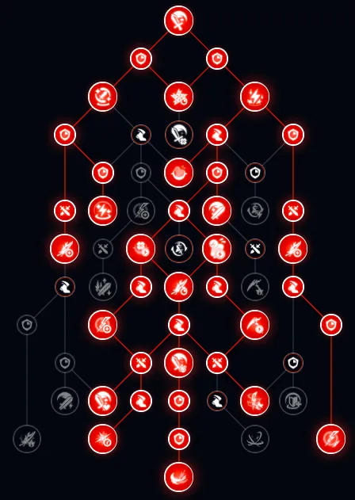
340 진화 발도(뇌절)와 장비 세팅은 같고, 용섬 옵션을 그림자 베기 옵션(10x)으로 바꿉니다.
몽환의 화살도 마스터리 스킬 기원 대미지 +20% 덕분에 더 좋을 가능성이 높습니다.
딜사이클:
- 진화 발도의 딜사이클과 같습니다. 다만 용섬 대신 그림자 베기(진화한 비뢰신)를 씁니다.
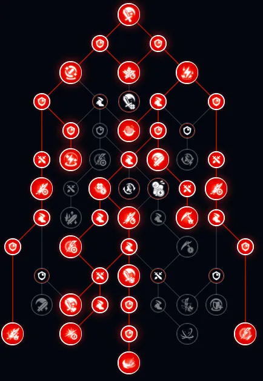
스탯:
- 황금률: 치명타를 최대한 72.72%에 가깝게 맞춥니다. 여기까지 맞출 때 생명 파동, 실반 오라클, 이매진을 반드시 계산에 넣어야 합니다.
- 왜 72.72%인가? 발도 자체 치명타 확률 어빌리티가 +22%입니다. 추격 태세(Wind Assault)까지 계산하면 (100% - 22%*1.24) = 72.72%가 남습니다. 쉽게 직접 확인할 수 있는데, 72.72% 미만이면 여전히 헛방이 나고, 그 이상이면 발도에서 더 이상 헛방이 나지 않습니다.
- 그럼 왜 넘기지 않는가? 치명타 스탯 효율 분석을 해 보면, 이그레우스의 치명타 초과분 전환 보너스를 감안해도 치명타 상한을 넘긴 분량은 대미지 효율이 끔찍합니다. 스탯은 다른 곳에 넣는 게 낫습니다. 제 말이 맞는지 검증해 주시기 바랍니다.
- 그다음은 무궁뇌정의 힘 동안 스킬 시전 횟수가 더 늘지 않을 때까지 속공에 넣습니다.
- 이번 시즌 속공은 두 번째로 좋은 스탯입니다.
- 저는 공격 속도 90% 근처에서 한계에 걸리는데, 그 지점에서 16/16(무궁뇌정의 힘 1회당 발도 16회, 인장을 꽉 채운 일섬 16회)까지밖에 못 뽑습니다. 핑이 아주 낮고 세팅이 더 좋은 분들은 저보다 훨씬 많이 뽑습니다.
- 협주도 민첩 버프로 속공을 준다는 걸 기억하십시오. 가능하면 속공 혜택을 받을 여유를 조금 남겨 두십시오.
- 파티 조합에서는 공허 감시자도 공격 속도 공급원이고, 숲의 심판 / 숲의 치유도 속공 버프를 줍니다.
- 남은 스탯은 숙련 / 만능에 넣습니다.
- 정확한 비율은 중요하지 않지만, 대략 숙련 - 20% = 만능 정도를 기준으로 삼으면 됩니다. 이 두 스탯을 최적화해서 얻는 실제 DPS 차이는 0.1% 이내로 미미합니다.
- 레이드 무기 옵션:
- 치명타 대미지 빌드(무크 두목 / 이그레우스 / 치명타 집중력)라면 번개 원소 보너스(%)
- 그 외에는 치명타 대미지(%)
- 바다 무기 옵션 (220+)
- 치명타(%) + 속공(%) 또는 숙련(%)
- 이그레우스 + 보이스를 쓴다면 속공(%), 성스러운 날치라면 숙련(%)을 씁니다. 단, 속공 / 공격 속도를 활용할 수 있다면 예외입니다. 속공(%)이 효율이 더 좋게 오르고 생명 파동을 다루기도 쉬워서(숙련으로 들어가지 않게 하기) 더 낫습니다.
- 무궁뇌정의 힘 상태 물리 대미지 증가(%) (Phys Boost)
- 설명이 필요 없습니다. 딜이 전부 무궁뇌정의 힘 동안 나옵니다.
- 번개 원소 보너스(%)와 치명타 대미지(%) 중 무엇을 고를지는 레이드 무기 옵션 항목을 참고하십시오.
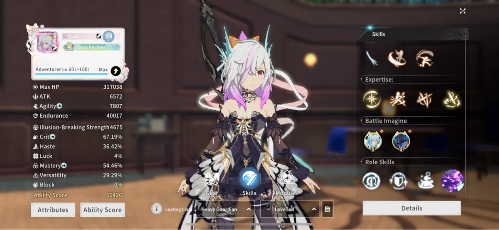
위 사진: 성스러운 날치 + 보이스 세팅, 레이드 무기 270
이매진 조합:
- 성스러운 날치 + 보이스/로로라
- 성스러운 날치가 필요한 속공을 전부 채워 주므로 주 능력치 / 보석(embed)을 전부 치명타에 넣고, 보조로 숙련/만능에 넣을 수 있습니다. 남는 재련 옵션은 치명타, 속공을 미세 조정한 뒤 숙련 / 만능에 돌리면 됩니다.
- 장점: 치명타가 고정됩니다. 성스러운 날치와 NPC 이매진을 같이 쓰면 항상 타이밍이 맞아서 플레이가 아주 매끄럽습니다.
- 단점: 생명 파동을 활용할 수 없습니다. 성스러운 날치는 2충전 이매진이 아니라서 전투 중 효율과 유연성이 떨어질 수 있습니다.
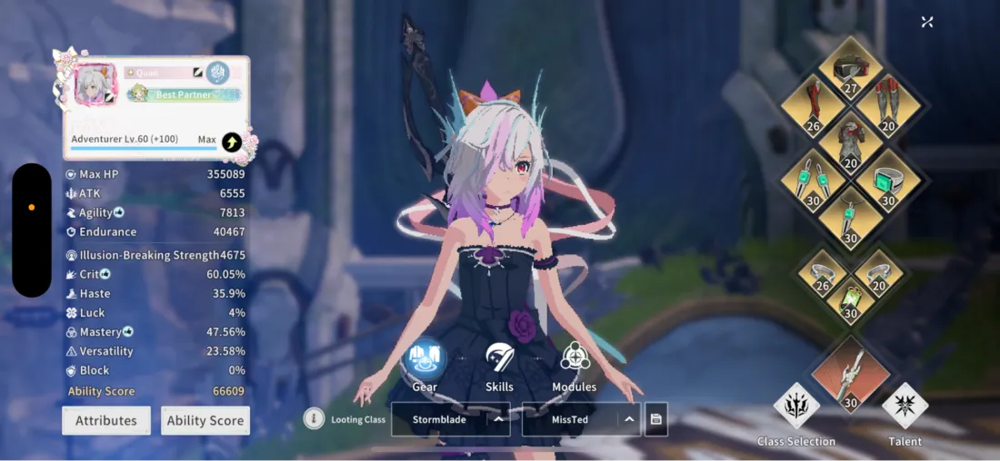
위 사진: 이그레우스 + 보이스, 레이드 무기 270
- 무크 두목 / 이그레우스 + 보이스/로로라
- 장점: 무크 두목 / 이그레우스가 항상 쿨마다 충전됩니다. 생명 파동을 중심으로 빌드를 짤 수 있을지도 모릅니다. 거탑 유적 / 티나 전투처럼 중간 휴지기가 긴 전투에 좋습니다.
- 단점: 이매진 버프가 꺼져 있을 때 헛방 확률이 높습니다. 버프 유지율을 최대로 하고 버프를 효율적으로 쓰려면 언제 폭딜을 넣을지 이해하고 있어야 합니다.
- 성스러운 날치 + 무크 두목 / 이그레우스 (미검증)
- 장점: 폭딜에는 무크 두목 / 이그레우스가 보이스 / 로로라보다 나을 수 있습니다. 다만 스탯 이매진 2개를 쓰면 스탯 희석을 겪을 수 있습니다.
- 역시 성스러운 날치 때문에 생명 파동을 쓸 수 없습니다.
어빌리티:
Talent Planner 링크
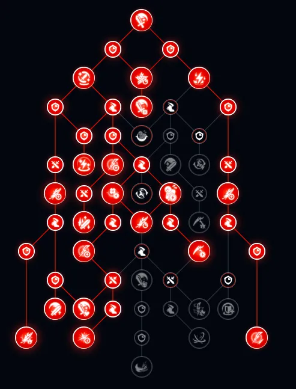
바꿔 볼 만한 선택지:
- 티나 버프 아래에서 1번 연타 딜사이클을 쓴다면 폭렬(치명타 대미지 +10%)을 파참(발도 물리 방어 30% 무시)으로 바꿔도 됩니다. 치명타 대미지 이매진(이그레우스 / 무크 두목)을 쓸 때도 치명타 대미지 배율 희석 때문에 고려할 만합니다.
- 숙련이 생명 파동에 영향을 준다면 정진(숙련 +6%)을 섬광 습격(인장 하나를 소모할 때마다 스킬 대미지 +3%)으로 다시 찍을 수 있습니다. 다만 둘 다 같은 배율 항목에 들어가기 때문에 섬광 습격은 정진의 하위 호환입니다.
- 정진(숙련 +6%)을 파멸의 종결(Ultimate Annihilation) + 파참으로 바꾸는 선택지도 있지만, 정진은 파티 이매진 버프를 받기 때문에 대체로 정진이 더 좋습니다.
딜사이클:
- 티나 버프 아래:
- 친구나 길드원에게 티나를 써 달라고 한 뒤 DPS를 확인합니다. 발도/일섬으로도 다시 해 봅니다. DPS가 더 높게 나오는 딜사이클을 고르십시오. 핑이 높은 분은 기본적으로 발도 / 일섬만 쓰십시오. 1번 연타는 핑이 낮은 사람만 누릴 수 있는 특권입니다.
- 예를 들어 (검증된) 저핑 유저는 한 구간에 발도를 36번 뽑을 수 있습니다. 저는 같은 스펙 / 스탯 분배로 28번밖에 못 뽑습니다. 서버에 더 가깝고 더 좋은 기기를 쓴다는 것만으로 30% 대미지 버프를 받는 셈입니다.
- 기본 폭딜 (~25초):
- 이매진 -> 무궁뇌정의 힘 -> 발도 + 일섬 반복. 이매진 버프 구간을 최대한 활용하려면 첫 번째 무궁뇌정의 힘이 끝나자마자 두 번째 무궁뇌정의 힘을 바로 이어 씁니다.
- 성스러운 날치 + 보이스일 때 일반 전투 딜사이클:
- 이매진 -> 무궁뇌정의 힘 2회
- 보이스 -> 무궁뇌정의 힘 2회
- 이매진 -> 무궁뇌정의 힘 3회
- 이매진이 다시 돌아올 때까지 휴지기. 여기서 티나와 휴지기 구간을 활용하고, 이 시점을 기준으로 폭딜 계획을 세우십시오.
- 보스가 죽을 때까지 무궁뇌정의 힘 3회 폭딜을 반복합니다.
- 이그레우스 + 보이스일 때 전투 딜사이클:
- 이매진 + 무궁뇌정의 힘 2회
- 이매진 + 무궁뇌정의 힘 2회
- 보이스 대기
- 이매진 + 무궁뇌정의 힘 2회
- 이그레우스 [선택, 전투에 따라 다름] + 무궁뇌정의 힘 1~2회
- 이매진 + 무궁뇌정의 힘 2회
- 보이스 + 이그레우스를 무궁뇌정의 힘 2회에 맞춰 쓰십시오. 그러다 보면 가끔 보이스 없이 이그레우스와 함께 무궁뇌정의 힘 2회를 쓰게 되는 구간이 생깁니다.
- 휴지기:
- 발도와 일섬을 자동에 넣고 H를 누릅니다. 발도나 진실(Reality) X2 인자로 인장이 붙은 일섬이 나올지는 완전히 운입니다. 인장이 붙은 일섬이 맞으면 큰 대미지가 나오고, 인장을 못 붙이면 휴지기 DPS가 박살 납니다.
- 가르치기도 하기도 가장 쉬운 휴지기 운영입니다. 실력 상한은 낮은데 보상은 큽니다.
- 팁: 맞힐 대상이 없어도 발도를 눌러 무궁뇌정의 힘을 충전하십시오. X2 인자로 인장을 소모하면서 쿨타임 감소를 조금이라도 얻을 수 있습니다. 보스를 다시 때릴 수 있게 되기 직전에 궁극기를 써서 인장과 도의를 채우십시오.
- 예시로 티나의 옷장 휴지기 기믹이 있습니다. 티나의 칼날이 전장을 가로지르기를 기다리는 동안 인장을 소모해서 쫄 페이즈에 쓸 무궁뇌정의 힘 2개를 모두 충전할 수 있습니다.
심상의 트리:
- 몽환의 힘
- 저는 대부분의 콘텐츠에서 몽환의 힘을 쓰고 치명타를 69%(숲의 심판이 있으면 67%)로 맞춥니다. 몽환의 힘이 꺼진 구간에서는 가끔 헛방이 나거나 일섬이 느리게 나가지만, 몽환의 힘 아래 전체 대미지가 강하고 발도와 일섬 수치 모두에 도움이 됩니다.
- 몽롱한 꿈속
- 스택을 잘 관리할 줄 알고, 티나 버프 아래 1번 연타가 가능하다면 좋습니다. 몽롱한 꿈속의 치명타 5% 보너스를 감안해서 치명타를 맞추는 것을 잊지 마십시오.
- 몽환의 화살
- 안정적이고 쓰기 쉬운 심상의입니다. 대부분의 유저에게 이 심상의를 강력히 추천합니다.
- 끝없는 사유
- 저는 끝없는 사유를 싫어합니다. 무궁뇌정의 힘을 무한으로 쓰는 대신 폭딜 1회당 대미지가 깎여서, 이매진 구간에 맞춰 운영하는 것보다 눈에 띄게 성능이 떨어집니다. 그래도 티나가 없는 파티에 있는 사람에게는 쓸 만한 선택지입니다.
인자:
- 영감: 발도 X1, 일섬 X2, 무궁뇌정의 힘 X5
- 극성: 전 원소 X1 & 민첩 X4, 특수 공격 X9, 마스터리 스킬 X10 중 하나
- 협주 버프는 민첩 인자(사실 어떤 배율로도)로 증폭되지 않으므로, 파티에 협주가 있다면 특수 공격이나 마스터리 스킬 인자가 더 나은 선택입니다.
- 몽환의 화살에서 마스터리 스킬 인자를 고를 때는 꿈% 배율 희석에 주의하십시오. 인자를 저울질할 때 일섬 / 발도 영감 인자와 파티의 적멸의 꿈이 주는 꿈% 배율도 함께 계산에 넣어야 합니다.
270 허수아비 측정 영상:
참고: 발도는 티나에 극도로 의존합니다. 이 허수아비 측정으로 다른 클래스와 비교할 수는 없고, 다른 발도 유저와만 비교할 수 있습니다. 허수아비 측정 영상은 빌드와 딜사이클 시연이자 비교 기준일 뿐이니, 허수아비 측정만 보고 발도가 쓸 만하다 / 못 쓴다는 결론을 더 내리지 마십시오.
성스러운 날치 보이스 270 허수아비 측정 [1.86m] - 발도
이그레우스 보이스 + 220 바다 무기
https://youtu.be/-euDgq6eVuk?si=4e2b16PwlVLKZPCL
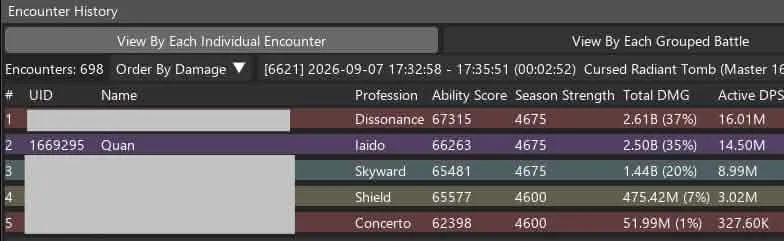
발도 몹몰이로 바닥 깔고도 700만 DPS가 넘게 찍힌다고 상상해 보십시오—잠깐만요..
어빌리티:
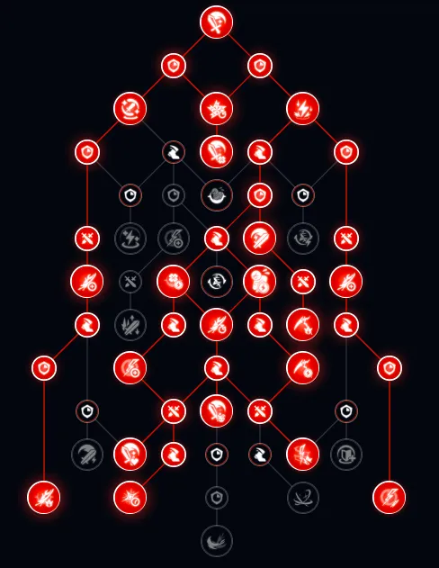
이매진:
- 이그레우스 + 성스러운 날치. 치명타는 ~60%(극・생명 파동이 있으면 ~50%)로 맞추십시오. 나머지는 속공 / 숙련 / 만능으로.
심상의 트리:
- 몽환의 화살
인자:
- 진실 인자 X6(뇌전의 낫)을 진실 인자 X1(번개 파동, Thunder Wave)으로 교체
- 발도 영감 인자 X1을 뇌절 영감 인자 X4로 교체
로테이션:
- 이그레우스 > 성스러운 날치(생명 파동 때문에 이그레우스를 먼저) > 무궁뇌정의 힘
- 뇌절 -> 비뢰신 x2 / x3
- 발도 -> (번개 파동 발동) -> 비뢰신 x2
- (뇌압(Thunderrage)이 5 이상이면 생략) 발도 -> 비뢰신
- 반복
가능하면 폭딜 넣기 전에 뇌압을 7까지 쌓으십시오.
- 뇌압 7스택으로 시작할 때와 8로 시작할 때의 차이를 직접 테스트해 봐도 됩니다. 7로 시작하면 첫 루프 후 다시 6스택으로 돌아오므로 발도 > 비뢰신 1회를 두 번 건너뛸 수 있고, 8로 시작하면 진공파 > 비뢰신 2회 후 5스택이 됩니다.
탱커가 몹 무리를 벽으로 몰아주면 비뢰신 초기화가 쉬워지고, 발도 진공파 두 줄기와 X1 파동을 모두 이중으로 맞힐 수 있어 DPS가 추가로 나옵니다.
파티에 렉 유발 계열(맹금 조련사 계열, 행운 계열 클래스)이 있으면 재미없을 겁니다. 다만 발도는 렉에 매우 민감해서 빌드와 상관없이 어차피 재미없습니다.
P3 나이트메어 세팅은 bucky의 구글 문서를 참고하십시오.
P3 TOP DPS IAIDO GUIDE
캐리해 준 rein에게 감사
참고:
- 보스 히트박스가 거대해서 P3 나이트메어에서만 쓸 만합니다.
- 이 빌드의 스탯 구성은 시즌4에서 최상위가 될 것입니다.
이매진 FAQ:
이 FAQ는 발도 + 일섬 연타를 쓰는 경우를 전제로 합니다. 뇌절 / 발도 진공파는 치명타 확률 상한이 더 높습니다.
성스러운 날치: 왜 날치인가?
첫 번째는 성스러운 날치의 유용성입니다. 날치냐, 이그레우스·무크 두목 같은 치명타 이매진이냐는 결국 상황이 무엇을 요구하느냐에 달려 있습니다. 둘 다 스탯을 줍니다. 날치를 고르면 치명타를 맞추고, 무크 두목을 고르면 치명타와 속공을 둘 다 맞추고, 이그레우스를 고르면 속공을 맞춥니다.
날치의 장점은 치명타가 고정(STATIC)이라는 점입니다. 즉 치명타 확률 100%를 유지하려고 이매진 버프에 의존할 필요가 없어서, 발도에서 치명타가 상한에 묶여 있으니 망할 가능성이 거의 또는 전혀 없습니다. 발도에게는 엄청난 편의성 향상이고, 제가 무크 두목이나 이그레우스 대신 날치를 쓰는 가장 큰 이유입니다.
가장 큰 단점: 날치와 생명 파동
날치와 생명 파동은 궁합이 맞지 않습니다. 치명타 상한 72.72%를 맞추면서 생명 파동까지 치명타로 보내기는 매우 어렵습니다. 생명 파동을 속공으로 보낼 수도 없습니다. 핑 문제로 발도 쿨타임이 늘어나서 높은 공격 속도를 활용하지 못할 가능성이 크기 때문입니다. 그렇다고 생명 파동을 숙련으로 돌리는 것도 효율이 좋지 않습니다.
생명 파동을 치명타로 보내 72.72%를 넘기면 대미지 이득이 매우 나쁩니다. 치명타 스탯 700포인트당 대미지가 대략 0.2% 오릅니다. 반면 만능 700포인트는 0.5%를 돌려줍니다. 치명타 10%는 대략 치명타 25,000포인트로 볼 수 있는데, 생명 파동으로는 약 7% 대미지 이득인 반면 그 스탯을 돌리면 최대 17%까지 이득을 볼 수 있습니다. 생명 파동을 민첩 강화 + 엘리트 타격 같은 것과 맞바꾼다고 다시 생각해 볼 수도 있는데, 그러면 12.6% 대미지 이득만으로도 이미 생명 파동을 앞지르는 것이 보입니다. (면책: 이 수치는 이론적이고 대충 어림잡은 것이며, 범용 대미지% 균형 같은 실제 상황도 꽤 무시한 계산입니다.)
보이스 vs 로로라:
시즌 초에 보이스와 로로라 중 무엇이 쓸 만한지 이야기한 적이 있습니다. 원래 보이스 vs 로로라 비교는 보이스와 로로라를 얼마나 빨리 쌓을 수 있느냐가 핵심이었습니다. 하지만 지금의 속공 빌드에서는 로로라도 빠르게 쌓을 수 있고 진실 인자 X6으로도 로로라 스택을 쌓을 수 있어서 이 차이가 크게 줄었습니다.
그래서 분석의 문제가 되었고, 다음을 가정하면:
- 성스러운 날치 버프(공격 속도 89%)를 기준으로 함
- 엘리트 타격, 극・대미지 중첩, 민첩 강화, 발도 계열·번개 저주 같은 어빌리티, 발도 레이드 세트 1의 2세트·4세트 같은 레이드 효과, 보라 장신구 효과(공격력 8% 대신 보스 대상 대미지 8%)에서 오는 범용 대미지% 버프
완벽한 상황에서는 보이스가 로로라보다 대미지가 4% 앞섭니다. 하지만 경험과 테스트로 보면 보이스의 공격 속도는 핑 / 기기 문제로 무의미해질 수 있습니다.
따라서:
보이스 vs 로로라는 전적으로 핑에 달려 있습니다. 보이스의 공격 속도는 로테이션에 직접 영향을 주고 추가 타격을 꽂아 넣게 해 주는 엄청난 스탯입니다. 하지만 그 혜택을 받을 수 없다면 보이스의 가치는 크게 떨어집니다.
보이스는 대미지% 옵션인가, 공격력% 옵션인가?
정말 상관없습니다. 발도의 대미지% 배율이 꽤 높아서 대미지 차이가 아주 미미합니다. 대미지% 모듈 3종(극・대미지 중첩, 엘리트 타격, 민첩 강화)이 세팅에 다 있지 않다면 대미지% 옵션을 살짝 선호해도 됩니다. 하지만 시즌 구조상 시즌 꽤 후반까지 맹금 조련사 계열로 멀티클래스를 할 수 없기 때문에 공격력% 옵션도 여전히 이득입니다.
이그레우스 vs 무크 두목:
이건 치명타 스탯을 어떻게 맞추느냐에 전적으로 달려 있습니다. 치명타 상한을 지키기만 하면 둘 다 쓸 만합니다. 치명타 상한을 지키는 무크 두목 빌드가 치명타 상한을 무시하는 이그레우스 빌드보다 성능이 좋을 가능성이 큽니다.
다만 이그레우스는 빌드 맞추기가 조금 더 까다롭습니다. 이그레우스는 치명타% 스탯을 워낙 많이 주기 때문에 황금률을 지키는 것이 불가능하다고 느낄 수도 있습니다. 그래서 제가 이그레우스 빌드와 정보를 공개하지 않았던 것입니다.
- 최고 점수를 노리고 전투를 정확하게 설계할 계획이라면(전투와 로테이션 전체가 항상 이그레우스 아래에 있음), 이그레우스 상태에서 치명타 72.72%가 되도록 대미지를 맞춰야 합니다.
- 하지만 대부분의 플레이어는 최고 점수나 최소·정확한 전투 시간을 노리지 않습니다. 그러니 다운타임에도 적당한 치명타를 갖도록 균형을 잡고, 폭딜 잠재력을 희생해서 이그레우스가 꺼져 있을 때 대미지가 처참하지 않게 하십시오.
수정: 생명 파동으로 치명타 확률 상한을 맞추고, 이그레우스를 완전히 치명타 대미지(%) 이매진으로 취급하는 방법도 있습니다. 이그레우스가 무궁뇌정의 힘 2연속 체인 지속 시간 전체를 덮지 못하기 때문에, 버프가 없는 무궁뇌정의 힘을 생명 파동이 메워 주면 훨씬 쾌적해지므로 고려할 만합니다. 대부분의 경우 이그레우스는 치명타 대미지% 35%짜리 패시브에, 액티브로 치명타 대미지% 40%를 주는 이매진으로 볼 수 있습니다(하늘이 내린 발도까지 고려했을 때).
이제 기본 치명타 대미지(%)를 150%로 가정하면(치명타(%) 72.72% -> 하늘이 내린 발도로 치명타 대미지(%) 43%, 레이드 세트 효과로 10%, 폭렬로 10%, 이그레우스 패시브로 35%), 치명타 대미지(%) 40%를 주는 액티브는 총 대미지를 약 16% 올립니다.
다시 말해 기본 치명타(%) 효율과 60% -> 100% 초과분을 활용하지 못하고 치명타 대미지 포화까지 감수해야 하니, 이그레우스는 덜 매력적입니다. 하지만 시즌4에는 뇌절의 치명타(%) 소프트 캡이 더 높아서 이그레우스가 훨씬 매력적인 이매진이 될 것입니다.
신규 플레이어 조언
성스러운 날치 대신 뿔염소, 로로라 대신 무크 선봉병 등으로 대체할 수 있지만.. 결국은 T5 금색 / NPC를 갖추는 쪽으로 키우는 데 집중해야 합니다.
신규 플레이어는 이매진 교환용 T5 두 세트가 돌아갈 때까지 무크 선봉병 / 뿔염소 / 숙련 여우(Mastery Fox)를 쓰십시오. 유연성을 위해 SR 하나, SSR 하나를 키우십시오. 무크 두목은 괜찮은 SR 투자처이고, 로로라는 괜찮은 SSR 투자처입니다.
모듈
대략적인 기준으로 전설 옵션은 보라 옵션의 2배 가치이고, 힘 강화는 보라 옵션의 0.5배 가치입니다. 보라 옵션끼리는 대미지가 1% 정도씩 차이 날 수 있지만 서로 매우 비슷합니다.
전설 옵션:
- 극・대미지 중첩
- 극・생명 파동
보라 옵션:
- 특수 공격 대미지 강화(발도 연타 빌드에서 최고의 모듈, 발도+일섬 연타에서는 중간 가치)
- 엘리트 타격, 민첩 강화
- 치명타 집중력
- 공격 속도 집중력
쓸 수는 있지만 비추천:
- 힘 강화
생명 파동에 대한 생각:
(추가 내용은 날치의 생명 파동 항목 참고)
저는 생명 파동을 좋아하지 않습니다. 특히 생명 파동 때문에 동급 보라 모듈 옵션 두 줄을 포기해야 한다면 더 그렇습니다. 치명타(%)와 숙련(%)은 효율이 꽤 나쁘고 체감되며, 속공(공격 속도) 이득은 핑에 막힙니다. 하지만 생명 파동은 다음을 키워 줄 수 있습니다
S/F 티어 빌드
다음 조건을 모두 충족할 때만 쓰십시오:
- 점수용 스피드런이고 Perfect를 노려서 보스를 3분 안에 잡아야 함.
- 핑 15ms
- 허수아비 옆에 서서 발도를 제외한 모든 자동을 끄고, 무궁뇌정의 힘 + H를 누릅니다. 문양이 꽉 찬 발도를 21번 못 뽑아내면 핑 때문에 대미지를 손해 보고 있는 겁니다. 🙂 발도 하나 놓칠 때마다 대미지 -5%입니다.
- 장비 수준까지 맞는 고정 파티: 티나 2명 + 협주는 필수.
또는:
- 콘텐츠 대비 "오버기어". 보스가 20초 만에 죽음. 파밍 콘텐츠용 빌드.
그 외에는 표준 발도 + 일섬 빌드를 쓰는 편이 낫습니다.
발도 단독 연타 빌드의 보이스 vs 로로라
로로라가 훨씬 낫습니다. 보이스 공격 속도는 티나 아래에서만 유용하고, 티나가 없으면 대부분 낭비되는 스탯이 되기 때문입니다.
고정 파티에서는 발도 단일 연타가 꽤 최상위급이고 강합니다.
시즌3 우선순위
환상꿈 강도를 위해 심상의 레벨 올리기(시즌2와 같음).
- 지역 퀘스트, 히든 퀘스트, 인연 퀘스트를 끝내십시오.
- 일일 숙제 유지(활약도 / 의뢰)
- 주간: 경험치 300만 상한(던전, 방치 파밍, 또는 유성 캐주얼 이벤트)과 유성 카니발 미션(기간 한정 12개, 상시 이벤트 6개)
상점(신규 플레이어 위주)
명성 상점(지도 > 아스테리아 평원/바하마르 고원 > 명성에서 진입)
- 윌 뽑기 코인과 필요하면 사탕을 싹 사십시오.
미스터리/우정/명예 코인 상점(상점 > 원더풀 상점 아래)
- 장미석 300개, 탁월 모듈 5개, 재련 30회, 엔그램
시즌 포인트 상점(시즌 > 상점 탭) + 보충 보상 상점
- 재련석, 최고급 재료, 인자 상자, 장비 개조
보스 / 엘리트 열쇠:
- 보스 열쇠는 공허 감시자에 써서 이그레우스 재료 / 음파 계열 유저에게 팔 공허 감시자 윌을 챙기십시오.
- 공허 감시자가 나오기 전에는 보스 열쇠를 광패한 왕에 써서 금색 인장을 챙기십시오.
- 엘리트 열쇠는 도골만에 써서 치명타 인장을 챙기십시오.
초반 / 마스터 이전
장비
스탯 우선순위:
치명타 > 숙련 >= 속공 > 만능
추천: 금색 장비 풀세트를 제작해서 최대한 빨리 치명타를 50%+까지 밀어붙이십시오. 공예, 주조, 직조가 Lv 50이 아니라면 가든 코인으로 집중력을 태우지 않고 레벨업을 앞당기는 것도 고려할 만합니다. 제작 장비는 옵션이 한 줄뿐이지만, 그 한 줄의 스탯이 일반 던전 장비보다 많습니다.
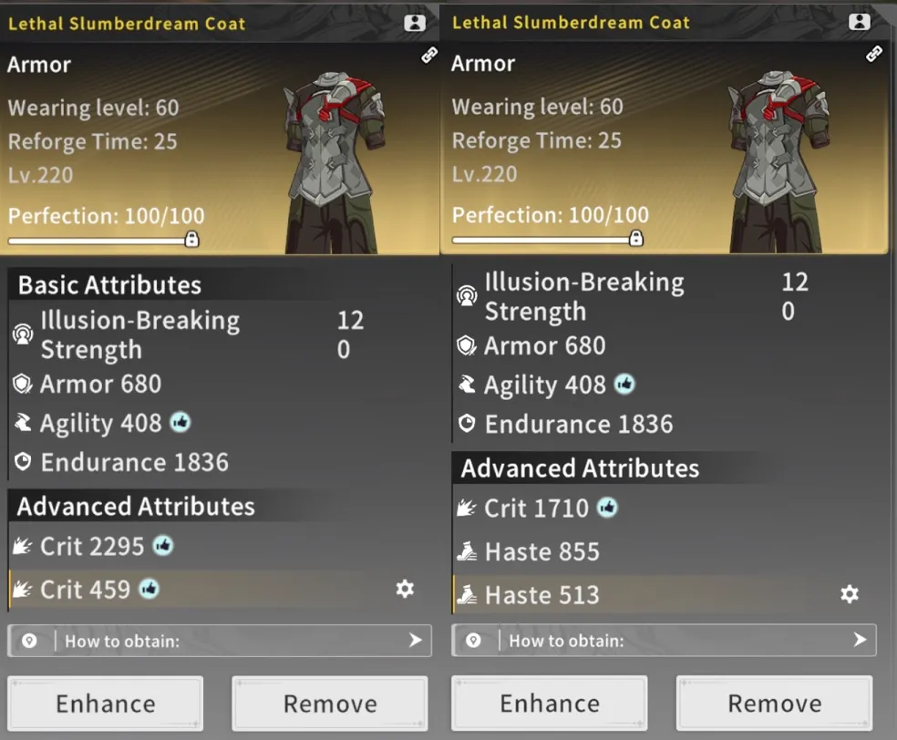
참고: 던전 & 월드 보스 장비가 총 스탯이 더 많아서 여전히 더 좋지만, 지금은 초반이니 치명타를 제 기능을 하는 수준까지 올리는 데 필요한 건 뭐든 하십시오. 이번 시즌은 이전 시즌보다 제작 비용도 훨씬 저렴합니다. 보라 옵션은 굴리지 마십시오. 어차피 던전 장비로 교체할 가능성이 매우 높습니다. 재련을 모두 마친 제작 장비 vs 던전 장비 비교입니다.
시즌2 빌드 / 보관본
- 발도 진공파
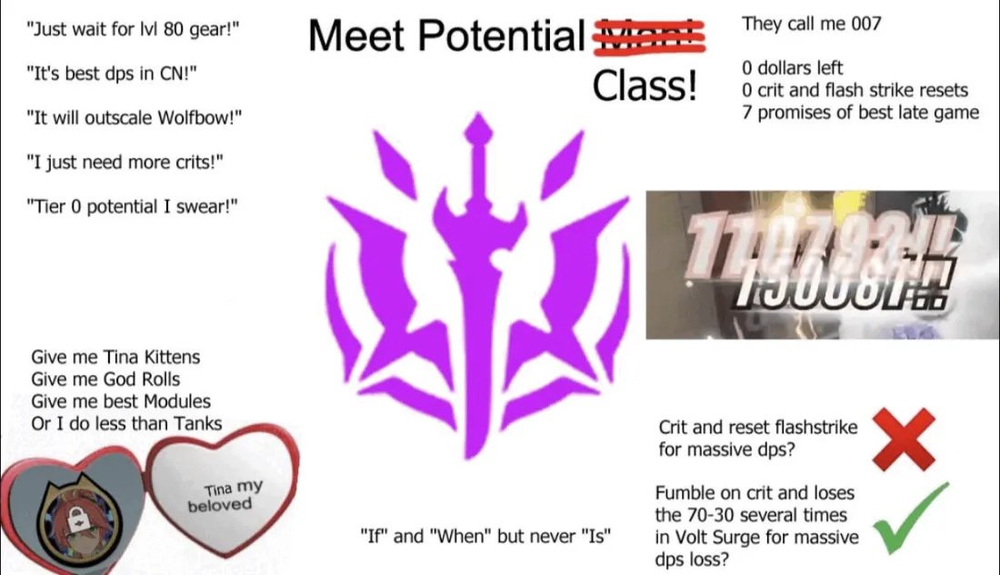
=> iaido_3.mp4 <=
역대 최고의 편집
ty berry, 6pek의 제자
발도 진공파 - 뇌절 빌드
소개
발도 진공파는 비뢰신 또는 일섬을 5회 사용하면 발도가 뇌절로 진화하게 해 주는 어빌리티 노드입니다. 서류상으로는 단순해 보이지만, 보이는 것보다 훨씬 흥미로운 특이한 성질이 꽤 있습니다. 첫 번째 성질(혹은 버그)은 히트박스가 큰 보스에게 검기 하나하나가 두 번씩 맞는다는 점입니다. 두 번째는 검기가 늦게 날아가기 때문에 일섬을 연속으로 여러 번 쓸 기회를 만들 수 있다는 점입니다.
시즌2에서 발도 진공파는 스톰 블레이드 X4 - 뇌절 인자로 큰 상향을 받았고, 이 인자가 뇌절의 시전 속도를 크게 올려 줍니다. 덕분에 흥미로운 새 폭딜 사이클이 몇 가지 생겼습니다.
이 트리 / 세팅은 언제 쓰나요?
발도 진공파 이후 일섬 2회? 아니면 발도?
답은 핑에 따라 다릅니다. 핑이 높다면 폭딜 사이클에서 진공파를 2번 맞출 수 있도록 일섬을 2회 쓰는 편이 좋습니다. 핑이 낮고(30ms 미만) 공격 속도 35%인 플레이어는 저핑 오프너를 쓸 수 있는데, 이 빌드에서 가장 폭딜이 높은 사이클 중 하나입니다.
마스터리 스킬
초고출력
일섬
비뢰신 또는 차륜의 낫 또는 심안
무궁뇌정의 힘
어빌리티 트리
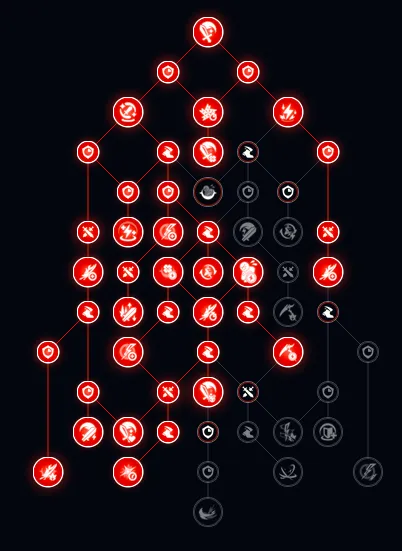
기본 딜사이클 예시 - 80ms 기준 뇌절 3회 사이클
세팅
뇌압(Thunderrage) 6스택, 뇌반은 4~5까지 쌓은 상태. 인장은 3~6개면 좋지만 필수는 아닙니다. 6스택을 만들려면 5스택에서 비뢰신을 씁니다.
딜사이클
이매진 > 무궁뇌정의 힘 > 초고출력 (대시 캔슬)
뇌절 > 일섬 2회
발도 > 일섬, 뇌절이 나올 때까지 반복
뇌절 > 일섬 1~2회
발도 > 일섬, 뇌절이 나올 때까지 반복
뇌절 > 발도 > 궁극 스킬 > 발도
설명
이것이 기본 콤보입니다. 딜 공백 동안 뇌압 스택을 쌓고 뇌반을 충전해 둡니다. 일반적인 보스에게는 그리 인상적이지 않지만, 큰 보스(레이드 보스 드래곤, 서펜트, 레이드 보스 골렘, 레이드 보스 로봇 2페이즈) 상대로는 뇌절의 두 번 맞는 성질/버그 덕분에 다른 모든 사이클을 큰 차이로 앞섭니다. 이 콤보에는 변형이 있는데, 5스택에서 일섬으로 시작하는 방식(뒤로 물러나지 않고 일섬 2회를 넣을 수 있는지가 관건)이나 발도 진공파 이후 일섬을 3회 쓰는 방식 등이 있습니다. 취향대로 고르면 됩니다. 저는 이 방식이 가장 돌리기 쉬웠습니다.
[영상]
기본 딜사이클 예시 - 뇌절 오프너
세팅
뇌압 0스택에서 시작합니다.
딜사이클
이매진 > 무궁뇌정의 힘
발도 > 일섬, 뇌절이 나올 때까지 반복
뇌절
일섬 x2
발도 > 일섬, 뇌절이 나올 때까지 반복
뇌절 > 궁극 스킬 > 발도
설명
첫 오프너로 쓰거나, 무궁뇌정의 힘이 돌아왔는데 스택이 0일 때 씁니다. 뇌반을 쌓아야 하기 때문에 뇌압 6스택을 미리 쌓아 두고 시작하는 것보다 이쪽이 더 좋은 오프너입니다.
[영상]
재미용 빌드
작업 중
진지하게 할 거면 하지 마세요
뿔염소 / 성스러운 날치 + 무크 두목
딜사이클: 뇌압 6~8스택 쌓기 뇌절 -> 일섬 3회 -> 비뢰신 -> 반복 또는 발도 + 일섬 + 비뢰신을 뇌절이 나올 때까지. 밈 빌드를 즐기세요
시디문 유적 몹몰이 빌드
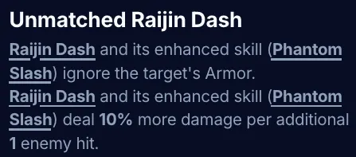
아니요, 딜 측정치는 절대 월광의 낫 계열이나 맹금 조련사 계열만큼 안 나옵니다. 꿈 깨세요. 이 빌드는 발도 원챔 전용이고 특정 상황 전용입니다.
일반적인 발도 > 일섬 콤보의 문제는 시디문 유적에서 몹이 공중에 오래 떠 있어서, 내 스킬뿐 아니라 파티원 스킬까지 헛치게 된다는 점입니다. 이 빌드의 목적은 딜사이클에서 일섬을 완전히 빼고 대신 비뢰신과 이 어빌리티를 우선하는 것입니다.
어빌리티 트리
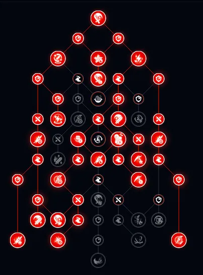
순간 베기 같은 물리 방어 무시 어빌리티는 모두 뺍니다. 대신 정진, 폭렬, 뇌반으로 비뢰신을 강화하려는 것이기 때문입니다.
같은 이유로 물리 방어 무시가 쓸모없으니 적수 멸시(Shadow Respite)도 찍지 않습니다.
딜사이클
이매진 > 무궁뇌정의 힘, 무궁뇌정의 힘이 끝날 때까지 발도 > 비뢰신을 반복합니다.
딜 공백 동안에는 발도(단일 베기) > 자동 콤보(관통) > 초고출력 > 비뢰신.
심상의
보스 층에서 트리를 왔다 갔다 바꾸지 않아도 되도록, 보통은 그냥 평소 쓰는 보스용 심상의 트리를 그대로 쓰면 됩니다. 그래도 트리를 원하는 분들을 위해 예시 트리를 넣어 두었습니다.
몽환의 화살
- 몽롱한 꿈속도 선택지지만, 나나 근처 파티원이 몹 어그로를 끄는 순간 바로 스택 타이머가 줄어들기 시작합니다.
- 몽환의 화살은 마스터리 스킬 대미지 +26%를 공짜로 주고, 화살 자체로도 쏠쏠한 부가 대미지가 나옵니다.
- 왼쪽(쿨타임 감소) > 오른쪽(최대 스택 +2) > 오른쪽(화살 관통) 순서로 찍습니다. 최대 스택 +2는 대미지가 더 낮아 보이지만, 화살 꿈 대미지 +15%가 숨겨져 있습니다.
심상의 인자
극성 인자 X1 - 모든 원소
극성 인자 X4 - 민첩(%)
극성 인자 X10 - 마스터리 스킬 꿈 대미지(%)
스톰 블레이드 인자 X2 - 비뢰신 꿈 대미지(%)
이 빌드의 핵심은 비뢰신이므로 마스터리 스킬 / 비뢰신 대미지는 전부 좋습니다. 스톰 블레이드 인자를 하나 더 쓸 수 있는데, 저는 개인적으로 X11을 씁니다. 관통 확률 증가와 인장 획득은 과소평가되어 있기 때문입니다.
추가: 무궁뇌정의 힘 인자 찍으세요 ㅋㅋㅋㅋㅋ
측정 결과
바다 무기 없음 + T3 로로라 + T5 무크 두목
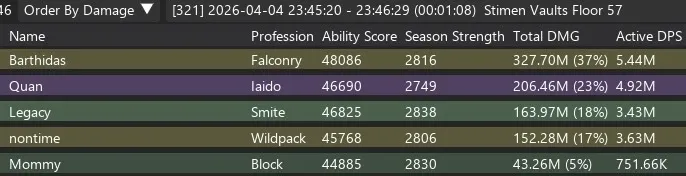
발도가 돌아왔다 발도가 돌아왔다 무궁뇌정의 힘 인자가 나왔다 발도가 돌아왔다 발도가 돌아왔다 발도가 돌아왔다발도가 돌아왔다 발도가 돌아왔다 무궁뇌정의 힘 인자가 나왔다 발도가 돌아왔다 발도가 돌아왔다 발도가 돌아왔다 발도가 돌아왔다 발도가 돌아왔다 무궁뇌정의 힘 인자가 나왔다 발도가 돌아왔다 발도가 돌아왔다 발도가 돌아왔다발도가 돌아왔다 발도가 돌아왔다 무궁뇌정의 힘 인자가 나왔다 발도가 돌아왔다 발도가 돌아왔다 발도가 돌아왔다 바다 무기 잘 가라. 글로벌판은 5월 5일에 수정됨. 시즌3에서 봅시다.
자주 나오는 토론 / 이런저런 생각
- 능력치 토론
- 어빌리티 토론
- 이매진 토론
- 모듈 토론
- 심상의 토론
치명타를 계속 쌓아야 하나요?
시즌 2
대미지만 놓고 보면 치명타는 효율이 꽤 나쁩니다. 50%를 넘기면 능력치 1포인트당 효율은 숙련과 만능이 치명타보다 훨씬 좋습니다. 하지만 치명타 50%로는 발도가 너무 자주 헛방이 납니다. 그래서 로테이션 안정성을 유지할 만큼만 치명타를 맞추고, 나머지는 속공·숙련·만능에 몰아주세요. 이 구간은 대략 치명타 55%~60%로 예상됩니다.
시즌 3 생각
새 이매진 이그레우스와 하늘이 내린 발도(치명타 확률에 비례해 치명타 대미지를 추가로 주는 어빌리티) 상향 덕분에 이제 치명타 효율이 매우 좋아졌습니다. 총 치명타 78%를 넘기지는 마세요. 그 수치면 발도가 100% 치명타로 확정됩니다.
속공은 얼마나 맞춰야 하나요?
시즌 2
빌드와 핑에 따라 사람마다 다릅니다. 다만 일섬과 발도 사이에 렉 같은 틈이 많이 느껴지기 시작하면 속공 / 공격 속도가 너무 높은 겁니다. 저는 속공 18%~19% 정도가 괜찮은 적정선이라고 보는데, 과학이라기보다는 감에 가깝습니다.
원하는 공격 속도 상한의 근사치는 직접 계산할 수 있습니다. 테스트해 보면 발도는 끝나는 데 약 40프레임, 일섬은 약 50프레임이 걸려 합계 90프레임입니다. 발도의 쿨타임은 꼬박 1초(즉 60프레임)이므로, 공격 속도 상한의 근사치는 단순히 (90 - 60) / (60) => 공격 속도 50% 상한입니다.
하지만 실제 플레이에서는 스킬이 나간 시점과 실제로 쿨타임에 들어가는 시점 사이에 눈에 띄는 지연이 있고, 이 지연은 핑 때문에 더 커집니다. 예를 들어 핑 0에서는 스킬이 쿨타임에 들어가기까지 1~2프레임 정도 지연이 있을 수 있습니다. 핑 80에서는 10~12프레임 지연이 생기므로, (90 - 70) / 70 => 공격 속도 28.5% 상한으로 계산하게 됩니다.
시즌 3 생각
이제 발도 쿨타임이 절반으로 줄어서, 공격 속도를 너무 많이 쌓아도 더 이상 손해를 보지 않습니다. 핑이 높은 유저도 쿨타임 감소 덕에 눈에 띄게 이득을 봅니다. 기본 쿨타임 위에 핑이 겹쳐 쌓이는 영향을 더는 받지 않기 때문입니다. 발도 연타 빌드는 글로벌에 들어오기 전까지 언급하거나 다루지 않겠지만, 중국 서버에 그런 빌드가 있다는 건 알고 있습니다.
숙련 vs 만능 비율은?
정확한 비율은 제 숙련 vs 만능 계산기를 참고하시면 되지만, 대략적인 기준은 숙련을 만능보다 20% 더 갖는 것입니다. 시즌 2 발도 숙련-만능 비교
시즌 3 생각
숙련 비율이 또 바뀌어서, 이 대략적인 기준은 시즌 3에서는 더 이상 정확하지 않습니다.
보라 옵션: 공격력 2% vs 보스 대미지 2%?
이건 어느 쪽을 고르느냐보다는 수확 체감과 공격력%가 실제로 어떻게 작동하는지에 대한 이야기에 가깝습니다. 무엇을 고를지 정하는 요인이 몇 가지 있는데, 첫째는 무크 선봉병이나 로로라를 쓰는지입니다. 무크 선봉병은 공격력%를 주고, 로로라는 대미지%(보스 대미지%와 합연산)를 줍니다.
이 게임에는 공격력%보다 대미지% 종류가 더 많습니다. 극・대미지 중첩, 맹독 민의 둥지, 엘리트 타격, 민첩 강화, 그리고 발도 계열의 발도 보너스나 번개 저주 같은 스킬 대미지%가 있습니다. 반면 공격력%에 영향을 주는 건 현재 보이스와 산적 두목(그리고 극・유연한 신법 모듈)뿐입니다.
공격력%는 모든 대상(더 중요하게는 몹몰이 중 엘리트)에게 적용되고, 보스 대미지는 보스에게만 적용된다는 점을 기억하세요. 하지만 공격력%는 단순히 대미지가 2% 오르는 게 아닙니다. 최종 배율로 작용하는 대미지%에 비해 상대적으로 약합니다. 공격력%의 효과는 적 방어력, 정제, 고정 원소 공격력에 의해 희석됩니다.
EffectiveATK = ATK * EnemyDMGReduction + RefinedATK + ElementalATK
보스 대미지%(대미지%에 속하며 다른 [범용] 대미지%와 합연산)는 맨 마지막에 곱해집니다.
FinalDMG = (EffectiveATK * Skill% + SkillFlat) * DMG% * …
공격력%와 보스 대미지%를 얼마나 맞출지 최적화하려면 링크한 대미지 시뮬레이터를 꼭 써 보시길 권합니다. 다만 제가 찾은 결과로는 (로로라 보유 같은 몇 가지 가정하에) 공격력% 4개가 다른 어떤 조합보다 낫습니다. 이유가 몇 가지 있는데, 첫째로 로로라 + 대미지 중첩/엘리트 타격 + 발도 계열 대미지% + 번개 저주가 대미지% 배율을 꽤 크게 희석합니다. 여기에 엘리트 음식까지 넣으면 대미지%가 10% 더 붙어서, 팀 버프 전인데도 배율이 60~70%까지 올라갑니다. 반면 순간 베기(방어력 감소)는 유효 공격력 계산에서 공격력의 효과만 키워 주므로, 발도에게 공격력%는 다른 클래스보다 훨씬 가치가 높습니다.
날카로운 일격 vs. 파참
순간 베기가 있으면 파참은 전체 로테이션 대미지를 최대 3%밖에 올려 주지 않습니다. 구체적으로 발도 / 발도 진공파에 대해서는 약 5~6%입니다.
일섬은 치명타 10%와 인장 증가를 얻습니다. 하지만 하늘이 내린 발도는 이 치명타 증가분을 치명타 대미지로 바꿔 주지 않으므로, 10%가 일섬 대미지를 직접 올려 주지는 않습니다. 치명타 65%(무크 두목), 치명타 대미지 150%라고 가정해 봅시다.
AVG_CRIT_DMG = CRIT_DMG * CRIT + NO_CRIT * (1-CRIT)
>> 250% * .65 + 100% * .35 = 1.98x VS. 250% * .75 + 100% * .25 = 2.125x <<
=> 2.13 / 1.98 = 일섬 평균 DPS 1.075배 증가. 일섬이 딜 비중의 35%를 차지한다고 가정하면 3% 대미지 증가입니다.
한 줄 요약: 인장까지 따지기 전부터 날카로운 일격이 파참보다 낫습니다.
섬광 습격
인장당 3%, 총 18% 대미지 증가라니 좋아 보이죠? 안타깝게도 이건 기존의 인장당 25%와 숙련에서 얻는 대미지와 합연산입니다. 숙련 0%를 가정해도 최대 5%이고, 숙련이 높으면 최악의 경우 1~2% 증가까지 떨어집니다.
시즌 2 모듈 분석
[시즌 2]
최적의 모듈은 로로라를 쓰는지, 다른 모듈을 갖고 있는지에 따라 달라집니다. 수확 체감 특성상 로로라를 보유하면 대미지(%) 모듈의 가치가 크게 떨어지고, 마찬가지로 로로라와 대미지 중첩을 쓰면 엘리트 타격과 민첩 강화의 가치는 더 곤두박질칩니다.
시즌 2에서는 치명타 집중력과 특수 공격 대미지 강화를 추천합니다. 이 모듈들은 민첩 강화보다 성능이 꽤 좋습니다. 공격 속도 집중력도 괜찮지만, 애초에 우리가 속공을 적게 쓰기 때문에 가치가 그리 크지 않습니다. 대미지 중첩은 언제나 왕이고, 특히 6-6-6 트리플 모듈 구성에 잘 들어맞으면 더욱 그렇습니다. 생명 파동도 괜찮습니다. 능력치를 더 효율적으로 분배할 수 있게 해 주지만, 빌드가 숲의 치유 계열과 함께하는 파티에 묶이게 됩니다.
시즌 3에서는 이그레우스와 하늘이 내린 발도 상향으로 치명타 대미지가 넘쳐나서 치명타 집중력의 가치도 폭락합니다. 공격 속도 집중력은 속공처럼 가치가 더 오를 수도 있습니다.
결국 특정 모듈에 집착하는 것보다 Lv6 모듈 효과를 더 많이 모으는 쪽이 영향이 큽니다. 모듈이 맞기만 하면 최적 구성을 따르기보다 링크 효과를 더 많이 챙기세요. 극(전설) 모듈 효과 1개는 일반 모듈 효과 2개로 쳐 주세요.
최고 모듈: 극・대미지 중첩, 생명 파동
특수 공격 대미지 강화, 치명타 집중력, 엘리트 타격, 민첩 강화
쓸 만한 모듈: 공격 속도 집중력
정신승리용(없는 것보단 낫다).
힘 강화, 극・유연한 신법
시즌 3 모듈 분석
[시즌 3]
생명 파동 vs 대미지 중첩
- 생명 파동은 유지율 최대를 가정하면 치명타가 10% 늘고, 이는 평균 총 대미지 10% 증가로 이어지며 5%까지(치명타가 상한을 넘었다면 0%까지) 줄어듭니다. 이 치명타%는 하늘이 내린 발도와 어쩌면 이그레우스의 초과분 변환으로 치명타 대미지로도 바뀌어, 치명타 대미지도 약 10% 늘어납니다. 합치면 현재 치명타 대미지와 치명타%에 따라 평균 8~10% 정도의 대미지 증가가 될 수 있습니다.
- 대미지 중첩은 꽤 희석됩니다. 로로라, 엘리트 타격, 발도, 번개 저주가 모두 같은 배율에 상당량을 더합니다. 대미지 중첩으로 대미지가 7%밖에 안 오르거나 그보다 더 낮을 수도 있습니다.
- 어쨌든 생명 파동과 대미지 중첩으로 666 세트를 만들 수 있다면 이 둘을 우선으로 챙기세요.
특수 공격 대미지 강화
- 아마 최종 종결(BIS) 모듈일 겁니다. 쿨타임 0.5초 상향, 숙련 상향, 기본 스킬 공격력 상향 이후 발도의 비중이 워낙 크기 때문입니다.
- 원소 대미지 12% 버프는 상대적으로 희석이 적습니다. 경쟁하는 건 번개 인장 친화, 뇌반, 시럽(Serums)(그리고 적멸 조율(Oblivion Tuning)이나 모든 원소 인자 같은 다른 버프 몇 개)뿐입니다.
- 그렇다고 일섬을 콤보에 섞기 시작하면 특수 공격 대미지 강화가 항상 종결이라는 뜻은 아니지만, 현재로선 가장 유력한 후보로 보이며 상황에 따라 극・대미지 중첩보다 나을 수도 있습니다.
- 발도 진공파를 즐기는 발도 유저라면 뇌절(발도 진공파)도 강화해 줍니다.
치명타 집중력 vs. 엘리트 타격
- 이번 시즌은 하늘이 내린 발도 상향 때문에 꽤 희석된 것 같지만, 12%는 여전히 무시하기 어려운 큰 배율입니다.
- 대미지(%)가 전혀 없다고 가정하면, 엘리트 타격이 더 좋으려면 치명타 대미지(%)가 82%를 넘어야 합니다.
- 엘리트 타격 Vs. 치명타 집중력 비교:
- 로로라가 없으면 대미지(%)가 최대 32% [극・대미지 중첩(12%), 발도 계열(12%), 번개 저주(8%)]이므로, 엘리트 타격이 치명타 집중력을 앞서려면 치명타 집중력 적용 전 치명타 대미지가 240%여야 합니다.
- 로로라가 있으면 대미지(%)가 최대 64% [+로로라(32%)]입니다. 엘리트 타격이 더 나은 선택이 되려면 치명타 집중력 적용 전 치명타 대미지가 299%를 넘어야 합니다.
- 반면 치명타 대미지 공급원은 이매진에서 65%, 기본 치명타 대미지% 150%, 하늘이 내린 발도에서 최대 70%입니다. 총 치명타 대미지는 최대 285%까지 오릅니다. 치명타를 120%까지 넘치게 쌓지 않으니 실제로는 265% 정도일 가능성이 높습니다.
민첩 강화
- 엘리트 타격의 완전한 하위호환입니다. 민첩 강화, 엘리트 타격, 극・대미지 중첩, 로로라를 같이 쌓는 건 최적이 아닙니다. 그렇긴 한데, 이게 당신의 666 모듈 선택지라면 그게 당신의 666 모듈 선택지인 겁니다. 극 모듈이 비슷하다는 가정하에 666 모듈은 어떤 형태의 665나 66보다도 여전히 낫습니다.
공격 속도 집중력
- [작업 중] 아직 분석은 없습니다. 속공 일부를 숙련 / 만능으로 바꾼 뒤, 능력치 교환으로 얻는 대미지 이득을 다른 모듈 세트와 비교하는 방식으로 분석할 예정입니다.
- 추측으로는 위의 모듈들보다 낫지는 않겠지만, 이 모듈을 네 번째 / 다섯 번째 효과로 넣을 수 있다면 넣으세요.
힘 강화
- 힘은 쓸모없는 능력치입니다. 방어 관통은 순간 베기 30%, 그리고 어쩌면 파참 30% 때문에 희석됩니다. 참고: 파참은 순간 베기와 곱연산입니다.
어떤 모듈 세트가 최적인지는 이매진, 다른 모듈, 팀, 쓰는 로테이션 같은 요인에 따라 달라서 평가하기 어렵습니다. 그래도 어떤 모듈이 최고인지 쫓기보다는, 가능한 가장 높은 모듈 세트를 갖추고 선택지끼리 비교해 보세요. 어쨌든 이 분석은 대미지 보너스의 복잡함과, 특정 모듈이 항상 다른 모듈보다 나은 건 아니라는 점을 이해하도록 돕기 위한 것입니다.
심상의 인자 / 트리 [시즌 2]
몽롱한 꿈속 vs 몽환의 힘 vs 몽환의 화살 vs 환상꿈 처형
몽롱한 꿈속은 시디문 유적 보스와 허수아비 딜 측정에만 쓰세요. 몽롱한 꿈속으로 허수아비 딜을 재면 꿈 대미지 +15%가 항상 붙어 있고 스택이 절대 빠지지 않아서 수치가 엄청 부풀려집니다. 마스터 콘텐츠에서는 몽롱한 꿈속의 유지율을 지키기가 너무 어려워서 투자할 만한 트리가 아닙니다. 예외도 있는데, 예를 들어 시즌 2 쇠락의 심연 보스에서는 100% 유지가 가능하지만 스택 유지에 신경을 많이 써야 합니다. 참고로 죽었다가 부활하거나 사탕을 먹으면 스택이 즉시 최대로 회복됩니다. 레이드 기믹을 잘 알지 못한다면 악몽 레이드에서는 이 트리를 추천하지 않습니다.
모든 콘텐츠에서 몽환의 화살은 무난한 선택이고, 특히 발도 / 일섬 연타 빌드에 좋습니다. 이 빌드는 발도 진공파 빌드보다 훨씬 쉽고 안정적으로 굴릴 수 있습니다. 마스터리 스킬 대미지 +26%는 믿을 만합니다. 이중 시공간(왼쪽) + 천류 팔중(오른쪽) + 환상 관통 공격(오른쪽)을 찍으세요. 시디문 유적 밖에서는 잠수 상태로 초고출력(Overdrive)만 연타하며 기다려서 화살을 미리 쌓아 둘 수 있습니다.
환상꿈 처형 (@symahi): 친애하는 발도 여러분, 갓(GOAT)을 소개합니다.
요점은 환상꿈 처형이 몽환의 화살의 치명타 지향 버전인데, 가끔 민첩 +10%를 얻을 수 있다는 겁니다. 그리고 민첩은 발도, 뇌절, 궁극의 참격처럼 딜 비중의 65%를 차지하는 모든 스킬 대미지를 올려 줍니다. 특수 공격과 마스터리 스킬 쿨타임 감소도 꽤 좋아서, 미니 티나(Tina)처럼 작동해 무궁뇌정의 힘을 더 빨리 쓰게 해 주고 발도 쿨타임도 줄여 줍니다.
.
몽환의 힘은 서류상으로는 몽롱한 꿈속과 몽환 계열 트리 사이의 좋은 절충안입니다. 몽롱한 꿈속보다 유지가 쉽고, 발도 / 뇌절에도 적용되는 버프를 줍니다. 하지만 실제로는 보스 타이밍 기믹을 따지기 전부터 무궁뇌정의 힘을 몽환의 힘에 맞추기가 매우 어렵습니다.
흔한 오해: 로로라가 있으면 몽롱한 꿈속이 낫고, 거미게를 쓰면 몽환의 화살이 낫다.
틀렸습니다. 몽환의 화살의 경우 거미게와 로로라 모두 화살 대미지를 올려 줍니다. 로로라의 대미지%는 화살 계산 맨 끝에 적용되고, 숙련은 화살의 스킬 대미지에 영향을 줍니다. 어느 경우든 몽환의 화살은 거미게와 로로라 양쪽의 이득을 봅니다. 몽환의 화살이 숙련 비례라고 해서 그 가치가 거미게에 달려 있다는 뜻은 아닙니다. 몽롱한 꿈속도 마찬가지로, 고정 공격력이 숙련 빌드와 비례하므로 거미게 빌드(그리고 로로라 / 기타)에서도 쓸 만합니다.
인자
한 줄 요약
범용 공격 인자: 모든 원소 + 민첩 + 특수 공격/마스터리 스킬.
클래스 공격 인자: 뇌절 + X11.
저는 X11이 제일 마음에 들었습니다. X11 인장 재생(Sigil Regeneration) 인자가 마음에 안 든다면 일섬 / 발도 인자도 좋습니다. 무궁뇌정의 힘 인자는 시즌 2에서는 쓰레기입니다. 시즌 3에서는 무궁뇌정의 힘이 엄청나게 강한 인자가 될 겁니다.
인자는 수확 체감의 영향을 받습니다. 모든 원소, 민첩%, 꿈 대미지%는 모두 희석되기 때문에 저는 로테이션형 / 고유한 형태의 대미지를 선호합니다. 몽환의 화살의 특수 공격 꿈 대미지%가 수확 체감이 낮은 좋은 예입니다. 다만 일섬 딜 비중을 더 높여서 특수 공격 꿈 대미지 부족분을 메울 수 있다는 주장도 있습니다. 어쨌든 발도와 뇌절이 여전히 대미지의 큰 비중을 차지하므로, 특수 공격 인자는 모든 트리에서 결국 매우 강합니다.
무과금이라면:
무크 선봉병 + 보스 2% 장비 또는 숙련 여우(Mastery Fox) + 공격력 2% 장비.
두 번째 이매진은 무크 두목, 타협 불가입니다. 무크 두목을 키우는 동안에는 보라 등급 치명타 양배추 이매진(Cabbage)을 써도 되지만, 무크 두목은 발도에 핵심입니다.
[시즌 3] 이그레우스가 나오면서 이제 치명타 이매진 선택지가 2개가 되었습니다. 하나를 골라 올인하세요. 무크 두목이 더 싸고 시즌 3에서도 이그레우스 상대로 여전히 성능이 괜찮지만, 이그레우스가 최종 종결입니다. 둘 다 쓰지는 마세요.
SSR vs SR 토론 / 생각
어떤 이매진? 보이스 vs. 로로라 vs. 거미게?
무크 두목은 고정 슬롯입니다. 치명타 대미지는 정말 귀한 데다, 우리 계열이 굴러가려면 치명타가 필수이기 때문입니다. 하지만 시즌 3에서는 새로운 인기 치명타 이매진인 이그레우스를 위해 무크 두목을 내려놓아야 합니다.
두 번째 이매진은 적어도 시즌 2에서는 로로라 > 거미게입니다. 숙련 비례가 크게 상향된 시즌 3에서도 로로라의 2충전 시스템은 거미게에 비해 매우 가치가 큽니다. 다만 숙련 비례 변경으로 격차가 상당히 좁혀져서, 거미게 없는 버스트가 로로라 없는 버스트보다 나은 수준이 되었습니다.
로로라 vs. 보이스는 어떨까요? 적어도 시즌 2에서는 속공/공격 속도가 일정량에 도달하면 발도의 1초 고정 쿨타임에 막히기 때문에 공격 속도의 가치가 훨씬 낮습니다. 시즌 3은 잘 모르겠으니 언급을 삼가겠습니다.
광역 몹몰이
단일 대상 스킬은 페널티를 받습니다. 대상이 2명을 넘으면 처음 2명 이후의 나머지 대상 전부에 페널티가 붙습니다. 모든 몹의 HP가 같다면 연타형 광역 빌드가 낫지만, 엘리트가 섞이기 시작하는 순간 단일 대상 빌드가 훨씬 낫습니다.
일섬과 발도(뇌절)는 단일 대상 스킬로 취급되고, 비뢰신은 광역으로 취급됩니다.
단일 대상 스킬은 1명(주 대상)에게 풀 대미지를 줍니다. 보조 대상에게 주는 대미지는 당신이 쓴 대로입니다(1명 95%, 2명 63.3%, 3명 47.5%, 4명 38%, 보조 대상 합계는 190%에 수렴). 광역 스킬은 각 대상에게 max(1, n-2)^-0.3을 줍니다(1~3명 100%, 4명 81.2%, 5명 71.9% 등).
단일 대상
대상 3명 | 2x 100% + 1x 95% | 합계 : 295% 대상 4명 | 2x 100% + 2x 63.33% | 합계 : 326.66% 대상 5명 | 2x 100% + 3x 47.5% | 합계 : 342.5% 대상 6명 | 2x 100% + 4x 38% | 합계 : 352%
광역
???
[S3]
발견: 폭참은 이그레우스의 초과분(치명타 12% 버프)에 적용되지 않음
영상: https://www.youtube.com/watch?v=dEfbCicwhLA
분석: 폭참 시연(명확한 근거를 위해 하늘이 내린 발도 없이). 여기서 추론할 수 있는 건 스킬에 붙는 치명타% 보너스는 이그레우스에 이득이 되지 않는다는 점입니다. 이그레우스 설명에 기본 치명타 확률만 따진다고 적힌 것과 일치합니다.
실패 가능성: 테스트가 제한적이었음. 하늘이 내린 발도 자체, 날카로운 일격, 도의 쌍절 같은 다른 가능한 요인은 테스트하지 않음.
[S3]
치명타 대비 숙련 또는 만능에 따른 발도 대미지 분석.
분석: 72.72% 임계점(발도 실제 치명타 확률 100%)을 넘은 상태에서 치명타 +700 추가
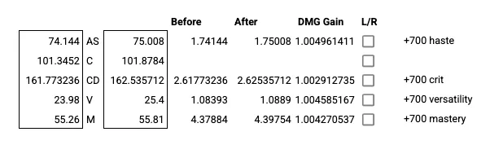
참고: 공격 속도는 상한선 개념입니다. 공격 속도로 얼마나 이득을 보는지는 본인의 핑, 기기, 설정에 따라 다릅니다.